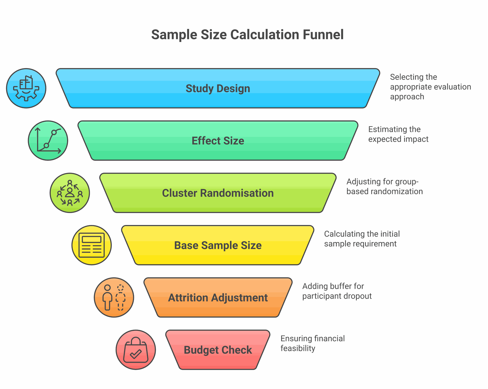

"How many households should we survey?" This is perhaps the most common—and most consequential—question in impact evaluation design. Get it wrong, and you risk either wasting resources on an oversized study or, worse, collecting data that can't detect your programme's effects even if they exist.
This guide explains the core concepts of sample size calculation without the jargon, and provides practical guidance for development practitioners designing evaluations. Getting this right is a cornerstone of data-driven decision making in the development sector.
The Core Problem
At its heart, sample size is about detecting real effects (signal) amid natural variation (noise). Your sample size determines your ability to distinguish signal from noise.
If your sample is too small, even real programme effects can get lost in the noise. You'll conclude "no significant effect" when the programme actually worked—a costly mistake for learning and accountability.

Four Key Concepts
The intuition:
- Bigger effect → need fewer observations (signal is louder)
- More variance → need more observations (noise is louder)
- Higher power wanted → need more observations (want more certainty)
- Lower significance level → need more observations (stricter threshold)
The defaults above—80% power and a 5% significance level—are conventions, not laws of nature. They trace back to Jacob Cohen's argument that, absent a specific reason to choose otherwise, treating a Type I error (false positive) as four times more serious than a Type II error (false negative) implies roughly these values (Cohen, 1988). J-PAL's power guidance likewise notes that most studies aim for power of 80% or higher. If the cost of missing a real effect is unusually high, it can be worth powering above 80%.
The Basic Formula
For a simplified two-group comparison, sample size can be calculated as:
n = sample size per group
Zα = Z-score for significance level (1.96 for α = 0.05)
Zβ = Z-score for power (0.84 for 80% power)
σ² = variance of outcome
δ = minimum detectable effect (MDE)
Key insight: The effect size (δ) is in the denominator and squared. This means that halving your expected effect size quadruples your required sample size.
Effect Size: The Hardest Part
Choosing an appropriate effect size is typically the most challenging part of sample size calculation. There are three approaches:
- Prior evidence: What have similar interventions achieved? Reviewing evidence from well-chosen indicators in comparable programmes helps. (Caution: publication bias often inflates reported effects.) J-PAL's quick guide to power calculations describes choosing the minimum detectable effect as "the hardest part," and cautions that there is no universal rule of thumb—the figure should be grounded in prior research and the programme's own cost-benefit logic.
- Minimum meaningful effect: What's the smallest change that would matter given your programme's cost? In a widely-shared World Bank Development Impact post, David McKenzie argues against stating an MDE purely in standard deviations (e.g. "0.3 SD")—translate it into the real-world units stakeholders care about (test questions, kilograms, rupees) and ask whether a change that size is worth detecting.
- Standardised conventions: As a last resort, Cohen's benchmarks treat a standardised effect (Cohen's d) of 0.2 SD as "small," 0.5 SD as "medium," and 0.8 SD as "large" (Cohen, Statistical Power Analysis for the Behavioral Sciences, 2nd ed., 1988). Cohen himself stressed these cut-offs were arbitrary and a fallback when domain-specific guidance is absent; in practice many social programmes achieve effects in the 0.1–0.3 SD range.
Cluster Randomisation Complications
In many development programmes, you can't randomly assign individuals—you must randomise at the village, school, or clinic level. This creates intra-cluster correlation (ICC), which dramatically increases required sample size. J-PAL's power guidance notes that designs randomising at more granular levels generally have greater statistical power, and that calculations should explicitly incorporate within- and between-cluster variance.
The Design Effect captures this inflation. In its standard form, DE = 1 + (m − 1) × ICC, where m is the cluster size—a formulation set out in Kerry & Bland's 1998 BMJ note on the intracluster correlation coefficient (BMJ 1998;316:1455):
| ICC | Cluster=10 | Cluster=20 | Cluster=50 |
|---|---|---|---|
| 0.01 | 1.09 | 1.19 | 1.49 |
| 0.05 | 1.45 | 1.95 | 3.45 |
| 0.10 | 1.90 | 2.90 | 5.90 |
| 0.20 | 2.80 | 4.80 | 10.80 |
The message: Cluster randomisation is expensive. Adding respondents within a cluster yields diminishing returns to power—once the ICC is positive, extra observations in the same cluster carry overlapping information—so adding more clusters usually buys precision more cheaply than enlarging the ones you have. Hemming and colleagues' guide to designing efficient cluster randomised trials works through exactly this trade-off, and recommends choosing the number of clusters and the cluster size together rather than one at a time (Hemming et al., BMJ, 2017).

A Worked Example
Agricultural Extension Programme
Baseline: 2,000 kg/hectare yield, SD 600 kg | Expected effect: 10% increase (200 kg) | Power: 80%, Significance: 5% | ICC: 0.05, Households per village: 15, Expected attrition: 10%
vs. 284 from naïve formula ignoring clustering and attrition
Rules of Thumb
Sample Size Sanity Checks
What If You Can't Afford Adequate Power?
Sometimes the honest answer is that rigorous impact evaluation isn't feasible given resources. Options include:
- Pool resources across organisations or sites
- Change the question—a well-powered process evaluation may be better than an underpowered impact evaluation
- Focus on larger effects—can you intensify the intervention in fewer sites?
- Accept uncertainty—an underpowered study with transparent limitations is better than no evidence, if expectations are managed. Being upfront about these trade-offs is part of ethical research practice
"An underpowered study isn't just a waste of money—it's a waste of everyone's time, including your participants'. You've collected their data, disrupted their days, and learned nothing useful."
Tools and Resources
Several tools can help with sample size calculations:
- G*Power — Free software for various study designs
- Optimal Design — Specifically for cluster randomised trials
- PowerUp! — Excel-based, developed for education studies
- ImpactMojo Sample Size Lab — Interactive calculator with South Asian context and INR cost estimation
For a book-length treatment that walks through statistical power for development evaluations, the standard practitioner reference is Rachel Glennerster and Kudzai Takavarasha's Running Randomized Evaluations: A Practical Guide (Princeton University Press, 2013), whose power chapter draws directly on J-PAL's field experience. J-PAL's own power calculations guide and the World Bank's DIME Wiki page on power calculations are concise, freely available companions.
Getting sample size right is one of the most important decisions in evaluation design. Pair it with good survey design and attention to data quality in the field, and you'll have a solid foundation for credible evidence. Our free Impact Evaluation 101 deck covers power and sampling in context, and the full Causal Inference for Development course goes deeper.